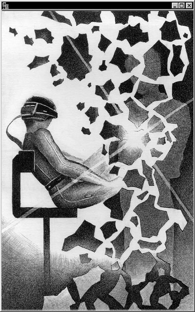

Часть первая
Глава 01
Первые движения – самые трудные. Комната небольшая, стол стоит посередине, жгуты проводов от компьютера тянутся к УПС – установке бесперебойного питания, в углу, и дальше – к розетке. Тонкий провод уходит к телефонной линии. У стены, под роскошным ковром, – тахта, у открытой двери на балкон – маленький холодильник. Самое необходимое. Пять минут назад я проверил, что лежит в холодильнике, так что голод в ближайшие сутки мне не грозит.
Я поворачиваю голову налево, направо – на мгновение в глазах темнеет, но это лишь секунда. Ничего. Бывает.
Динамики отрегулированы на максимум, я морщусь, отвечаю:
– Звук – тише, – соглашается «Виндоус-Хоум», – тише, тише…
– Хватит, Вика, – останавливаю я. Хорошая программа. Послушная, понятливая и доброжелательная.
Не без самомнения, как вся продукция «Майкрософта», но с этим приходится мириться.
– Удачи, – говорит программа. – Когда тебя ждать?
Я смотрю на экран – там, в ореоле оранжевых искр, плывет женское лицо. Молодое, симпатичное, но, в общем, ничего особенного. Устал я от красоты.
– Не знаю.
– Я бы хотела иметь десять минут на самоконтроль.
– Хорошо. Но не более. Через десять минут мне понадобятся все ресурсы.
Лицо на экране морщится – программа вычленяет ключевые слова.
Только десять минут, – покорно говорит «Виндоус-Хоум». – Но я вновь обращаю твое внимание, что уровень поставленных задач не всегда соответствует объему моей оперативной памяти. Желательно расширение до…
– Утихни. – Я встаю. «Утихни» – это безусловный приказ, после него программа спорить не смеет. Шаг влево, шаг вправо… Ха-ха. Нет, это не попытка к бегству, это скорее добровольное заточение. Я дохожу до холодильника, открываю дверцу, достаю банку «спрайта», открываю. Напиток холодит горло. Это почти ритуал – глубина всегда сушит слизистую. С банкой в руке я выхожу на балкон, в теплый летний вечер.
В Диптауне почти всегда вечер. Улицы залиты светом реклам, тихо рокочут несущиеся машины. И идут, идут сплошным потоком люди. Двадцать пять миллионов постоянного населения – самый крупный мегаполис мира. С высоты одиннадцатого этажа лиц не разглядеть. Я допиваю «спрайт», кидаю банку вниз и возвращаюсь в комнату.
– Неэтично… – бормочет компьютер. Не реагируя, я выхожу в прихожую, обуваюсь, открываю дверь. Подъезд пустой и светлый, очень-очень чистый. Пока я вожусь с замком, в полуоткрытую дверь пытается влететь крошечный жучок. Ага. Ламеры развлекаются. Я с иронией наблюдаю за настырным насекомым – из квартиры дует ровный поток воздуха, вынося его обратно. Наконец дверь закрыта, жучок в последнем усилии бьется в нее, короткая вспышка – и насекомое падает на пол.
– Подать жалобу владельцу дома? – спрашивает «Виндоус-Хоум». Теперь голос идет из серебряных заколок на лацканах моей рубашки.
– Подавай, – соглашаюсь я. Все забываю объяснить программе, что владельцем дома являюсь я сам.
Лифт ждет меня на этаже. Обычно я спускаюсь по лестнице… заглядываю по пути в чужие квартиры. Там ведь все равно никто не живет… но сейчас я спешу. Лифт опускается – очень быстро. Выхожу на тротуар, оглядываюсь – может быть, увижу любителя насекомых? Но никого подозрительного нет, все спешат по делам. Жучок явно залетный, серийной работы. Их травят на улицах, бьют в квартирах, но они не переводятся.
Я и сам когда-то развлекался подобной ерундой. Очень-очень редко жучкам удавалось принести интересную информацию.
– Леня, на имя компании «Поляна» поступила жалоба от квартиросъемщика номер один.
– Игнорируй, – бурчу я, наблюдая за идущим по тротуару мужчиной. Да, это нечто! Гибрид Арнольда Шварценеггера в молодые годы и Клинта Иствуда в пожилые. Очень, очень смешно. Мужчина ловит мой насмешливый взгляд и ускоряет шаги.
Я поднимаю руку, и через мгновение у тротуара притормаживает желтый лимузин.
– Леня, твоя жалоба компании «Поляна» проигнорирована!
– Ладно. Ничего.
Это может продолжаться бесконечно долго, а мне сейчас не до игр… Я сажусь в машину, водитель – улыбчивый парень с безупречной прической и в накрахмаленной рубашке, поворачивается ко мне. Предпочитаю таких таксистов, вышколенных и немногословных.
– Компания «Дип-проводник» рада приветствовать вас!
Имени он не называет – программа остановила такси анонимно.
– Как будете оплачивать счет?
– Вот так, – говорю я, доставая из кармана револьвер. Сильно бью парня в висок. Он пытается защититься, но не успевает. Я смотрю на его побледневшее лицо, встряхиваю за шиворот, приказываю:
– Квартал «Аль-Кабар».
– Данного адреса не существует, – говорит водитель. Он «оглушен» и покорен.
– «Аль-Кабар». Восемь-семь-семь-три-восемь. – Простенький код открывает доступ к служебным адресам «Дип-проводника». Я мог бы и не бить водителя, но тогда в файлах компании осталась бы информация о поездке.